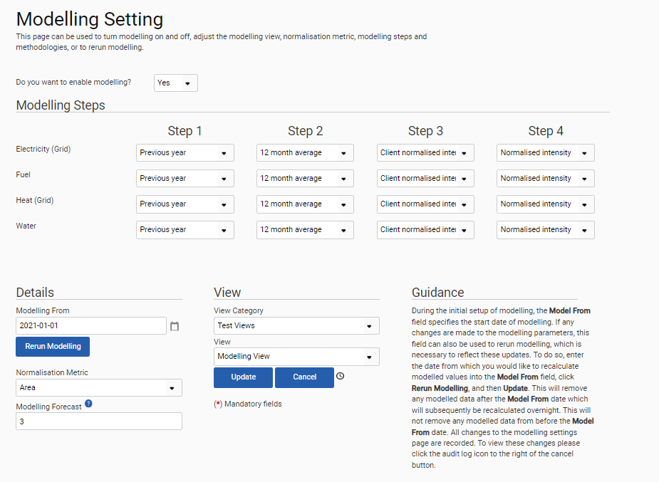

GSE-426: An Administrator can now change the modelling dashboard settings manually.
This is achieved using the new Modelling Settings page. The page is accessible through Admin Settings > Environment > Modelling > Modelling Settings.
The Administrator must have an Admin Environment user role.
To make changes to the settings, the ‘Do you want to enable modelling?’ field at the top of the page must first be set to ‘Yes’.
The Administrator can:
Specify modelling steps (Off, Previous Year, 12-Month Average, Normalised Intensity, or Client-Normalised Intensity) one through four for Electricity (Grid), Fuel, Heat, and Water. Note: To specify a modelling step option for a consumption type, an option must be specified for the previous step. For a single consumption type, it is not possible to use the same step option across multiple steps.
Adjust modelling details (the Model From date, Normalisation Metric, and Modelling Forecast).
Specify the view category and view (from a list of those within the user’s permissions).
Mandatory fields are marked with a red asterisk.
The changes made will only take effect when the Administrator clicks the Update button.
If the Administrator clicks the Cancel button, all changes will be cleared.
Once the changes are made and the Administrator has clicked Update, the Rerun modelling button will recalculate all modelled values that correspond to the changes, from the 'Model From' date onwards.
Applicable warnings and appropriate error messages have been implemented.

Note: All of this functionality was first made available in release 2024.1.1.